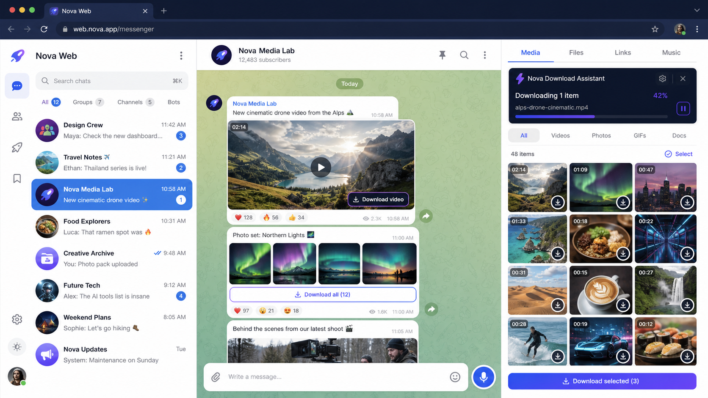

Media completa
Descarga desde el chat o cada miniatura de la galeria multimedia.
Descarga videos e imagenes desde chats y galerias multimedia, con progreso visible y control total.
Encina coloca controles precisos dentro de Telegram y mantiene el progreso sincronizado entre el chat, Media y su gestor de descargas.
Detecta el tipo de archivo, muestra el avance en tiempo real y recuerda lo que ya descargaste.

Descubre como descargar imagenes y videos de Telegram Web de forma rapida, simple y organizada.
Encina se integra en la interfaz sin interrumpir tu navegacion.
Una comparacion clara frente a muchas extensiones tradicionales.
Encina reúne los archivos detectados en un gestor visual. Revisa miniaturas, duración, tamaño y progreso antes de decidir qué guardar.
Descarga desde el chat o cada miniatura de la galeria multimedia.
El porcentaje acompaña al archivo incluso cuando cambias de vista.
Selecciona varios elementos, revisa sus caratulas y controla cada descarga.
Distingue imagenes y videos para aplicar el metodo correcto a cada archivo.
Pausa, continua o detiene una descarga sin perder el control de la sesion.
Identifica archivos completados para evitar descargas repetidas.
El panel permite decidir cómo debe comportarse Encina sin recargar Telegram. Cada opción tiene un propósito sencillo y puede cambiarse cuando sea necesario.
Activa los botones sobre elementos muy pequeños. Desactívalo para mantener una vista más limpia y limitar Encina al contenido principal.
Después de una descarga exitosa, Encina puede bloquear ese botón y marcar el archivo como guardado. Si prefieres repetir descargas, puedes dejarlo habilitado.
Cada version tiene su propio sistema de deteccion optimizado. Encina se adapta sin mezclar sus comportamientos.
La infraestructura de suscripcion se conectara antes del lanzamiento publico.
Para probar todo el flujo de Encina.
Para usuarios que descargan contenido con frecuencia.
Encina funciona sobre Telegram Web A y K dentro de Chrome. No controla la aplicacion nativa.
Solo trabaja con contenido que tu cuenta ya puede ver dentro de Telegram Web.
Videos, imagenes y otros archivos visibles compatibles, tanto en chats como en Media.
No. Es una herramienta independiente y no esta afiliada ni respaldada por Telegram.
Prueba Encina y descubre una forma mas completa de guardar lo que necesitas.